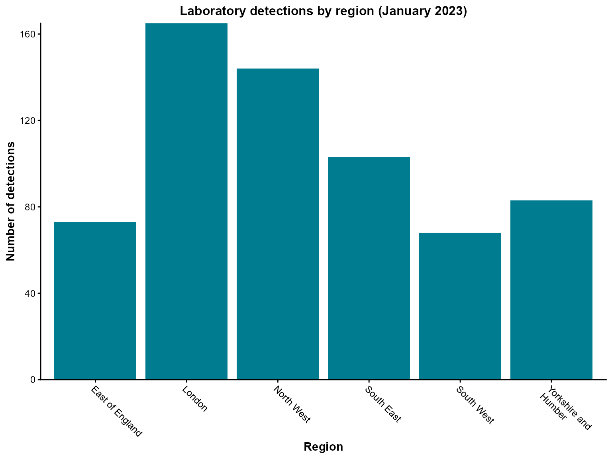
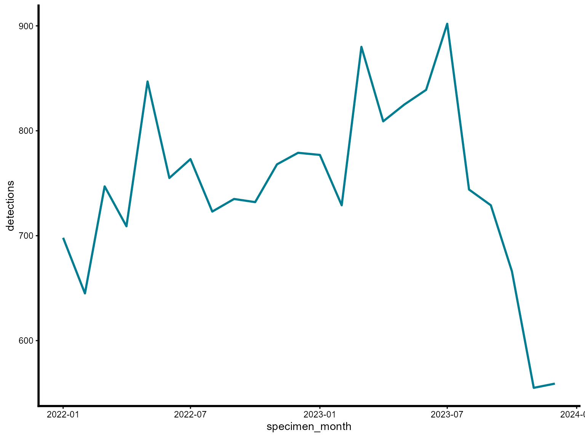

getting-started.RmdThe epiviz package provides epidemiological
visualization functions for creating both static (ggplot2) and
interactive (plotly) charts commonly used in public health surveillance
and outbreak investigation. This guide introduces you to the package
using the built-in lab_data dataset.
lab_data is a synthetic laboratory dataset included with
epiviz for demonstration purposes. It contains simulated laboratory
detection data with typical epidemiological variables:
## Rows: 32,560
## Columns: 8
## $ date_of_birth <date> 1938-10-05, 1957-04-04, 1927-06-24, 1962-06-14,…
## $ sex <fct> Female, Male, Male, Male, Male, Male, Male, Male…
## $ organism_species_name <fct> KLEBSIELLA PNEUMONIAE, KLEBSIELLA PNEUMONIAE, ST…
## $ specimen_date <date> 2020-05-24, 2023-07-08, 2023-02-24, 2023-08-26,…
## $ lab_code <fct> BI20985, JH70033, CU5997, ES3851, YA29556, QF111…
## $ local_authority_name <chr> "Worthing", "Reading", "Plymouth", "Cheshire Wes…
## $ local_authority_code <chr> "E07000229", "E06000038", "E06000026", "E0600005…
## $ region <chr> "South East", "South East", "South West", "North…The dataset includes: - Patient demographics:
date_of_birth, sex - Laboratory
information: organism_species_name,
specimen_date, lab_code - Geographic
data: local_authority_name,
local_authority_code, region
When analyzing laboratory surveillance data, we often want to understand the geographic distribution of detections. Here we’ll create a simple column chart showing detections by region for a specific time period.
# Filter to a specific time period and aggregate by region
regional_detections <- epiviz::lab_data %>%
filter(
specimen_date >= as.Date("2023-01-01"),
specimen_date <= as.Date("2023-01-31")
) %>%
count(region, name = "detections") %>%
arrange(desc(detections)) %>%
slice(1:6) %>% # Keep top 6 regions for readability
mutate(
# Handle long region names for better display
region = ifelse(region == "Yorkshire and Humber",
"Yorkshire and\nHumber", region)
)
col_chart(
dynamic = FALSE, # Create static ggplot chart
params = list(
df = regional_detections,
x = "region", # Variable for x-axis
y = "detections", # Variable for y-axis
fill_colours = "#007C91", # Single color for all bars
chart_title = "Laboratory detections by region (January 2023)",
x_axis_title = "Region",
y_axis_title = "Number of detections",
x_axis_label_angle = -45, # Rotate labels for readability
show_gridlines = FALSE # Remove grid lines for cleaner look
)
)
Interpretation: This chart shows the regional distribution of laboratory detections in January 2023, with London having the highest number of detections.
Time series analysis is fundamental in epidemiological surveillance. Here we’ll create a line chart showing monthly trends in detections over a two-year period.
line_chart(
dynamic = FALSE, # Create static ggplot chart
params = list(
dfr = monthly_detections, # Note: use 'dfr' parameter for line_chart
x = "specimen_month", # Date variable for x-axis
y = "detections", # Count variable for y-axis
line_colour = c("#007C91"), # Color for the line (vector format)
line_type = c("solid") # Line type
)
)
Interpretation: This line chart reveals seasonal patterns in laboratory detections, with potential peaks and troughs throughout the two-year period.
Start with static charts: Use
dynamic = FALSE initially to create ggplot2 charts, then
switch to dynamic = TRUE for interactive plotly charts when
you need zooming, hovering, or filtering capabilities.
Filter your data: The lab_data
dataset is quite large. Always filter to specific time periods, regions,
or organisms to create readable visualizations.
Check your data structure: Use
glimpse() or str() to understand your data
before passing it to visualization functions.
Parameter naming: Most functions use a
params list to organize parameters. This keeps function
calls clean and allows for easy parameter reuse.
Color consistency: Use consistent color schemes
across your visualizations. The package provides sensible defaults, but
you can customize colors using the *_colours
parameters.